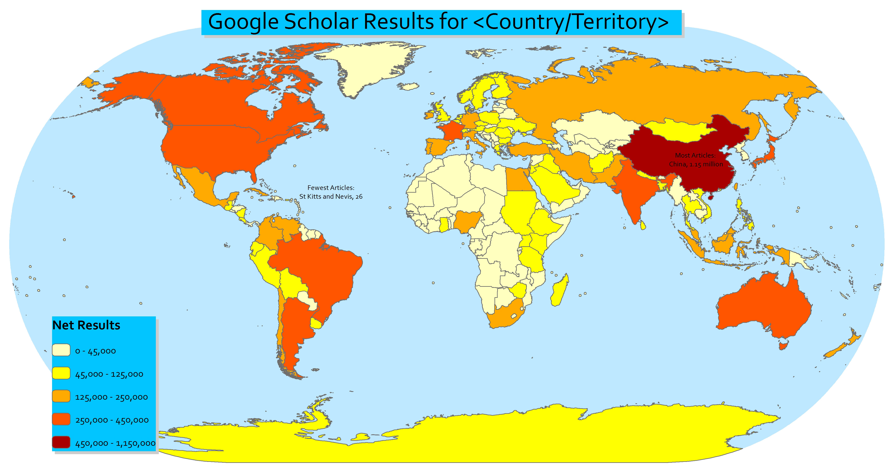
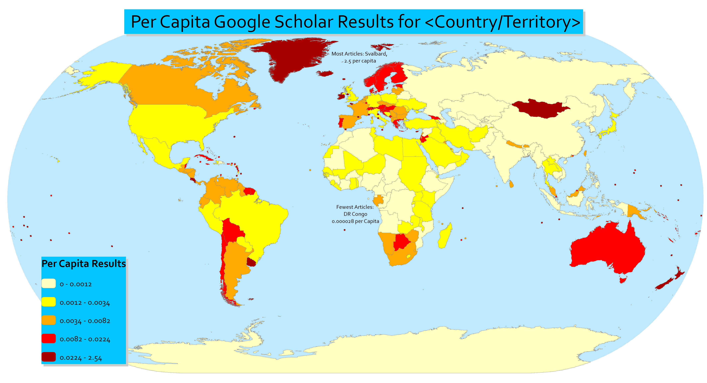
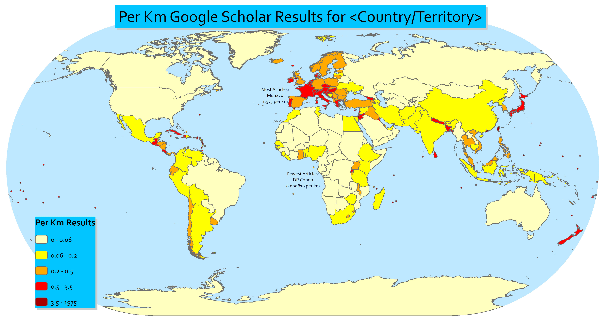

Most and Least Studied Places on Earth
Since I do research in Mali, I've spent a lot of time on sites like Google Scholar, Scopus and Web of Science looking for articles about similar research done there. But, there aren't a lot of articles on this obscure African country. I wondered how research on Mali compares to the amount done in other African countries, or even other countries in the world. So I decided to make a map (or 3).



And I was right, Mali is one of the more under-studied places on earth, but so are most African countries. Both per Capita and per Km, the DRC is the most understudied, which is a real shame. DRC is home to some incredible natural wealth and biodiveristy which is definitely deserving of more scholastic attention, as well as the most deadly conflict since World War II, which needs more attention from the world in general. I was surprised to see so many net results about China, but I guess there is a lot to study there.
These results just show the raw amount of articles returned, and don't show the subjects that research was done it, whether the research was done in books or articles, or even when the publishing was done. All of this would be super interesting to dig into, if only google made automated queries and web-scraping more easy.
Another major caveat is that some country names will only come up in English-language queries, for example "Germany" and "Democratic Republic of the Congo" will only return English results, whereas a country name like "Mali" will return results in most languages that academic articles are written in.
For countries whose names mean more than just the country, I tried to exclude other related terms. So, for Guinea, I had to exclude Guinea Worm, Equatorial Guinea, Guinea Pig, Guinea Fowl, etc.
I could have simply searched for every country on Google Scholar manually. But why do something repetitive and boring on a computer when that's exactly the kind of task that computers are good at doing? You just have to know how to tell a computer what exactly you want it to do. So I wrote a script in Python using the BeautifulSoup module to query Google Scholar for countries and return the number of articles about that country. But... google doesn't permit queries that aren't from browsers, or queries that are automated. So I had to disguise python as a browser, and I could only get about 40 results before Google Scholar stopped returning them. All in all, it took me a few days, whereas just doing it manually would have taken maybe an hour. But, hey, it was fun!

{kind=link}
{kind=link}
{kind=link}